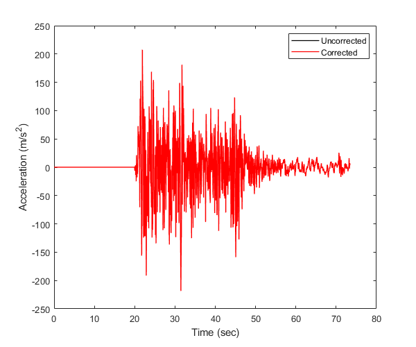

example baselineCorr
Apply baseline correction in OpenSeismoMatlab
Contents
Earthquake motion
Load earthquake data
fid=fopen('Imperial_Valley_El_Centro_9_EW.dat','r'); text=textscan(fid,'%f %f'); fclose(fid); time=text{1,1}; xgtt1=text{1,2}; dt=time(2)-time(1);
Integrate without baseline correction
Calculate the velocity and displacement time histories
xgt1 = cumtrapz(time,xgtt1); xg1 = cumtrapz(time,xgt1);
Integrate with baseline correction
Calculate the displacement, velocity and acceleration time histories
[xg2, xgt2, xgtt2] = baselineCorr(time,xgtt1);
Plot corrected and uncorrected acceleration
figure() plot(time,xgtt1,'k','LineWidth',1) hold on plot(time,xgtt2,'r','LineWidth',1) hold off ylabel('Acceleration (m/s2)') xlabel('Time (sec)') legend('Uncorrected','Corrected')
Plot corrected and uncorrected velocity
figure() plot(time,xgt1,'k','LineWidth',1) hold on plot(time,xgt2,'r','LineWidth',1) hold off ylabel('Velocity (m/s)') xlabel('Time (sec)') legend('Uncorrected','Corrected')
Plot corrected and uncorrected displacement
figure() plot(time,xg1,'k','LineWidth',1) hold on plot(time,xg2,'r','LineWidth',1) hold off ylabel('Displacement (m)') xlabel('Time (sec)') legend('Uncorrected','Corrected')
Copyright
Copyright (c) 2018-2023 by George Papazafeiropoulos
- Major, Infrastructure Engineer, Hellenic Air Force
- Civil Engineer, M.Sc., Ph.D.
- Email: gpapazafeiropoulos@yahoo.gr